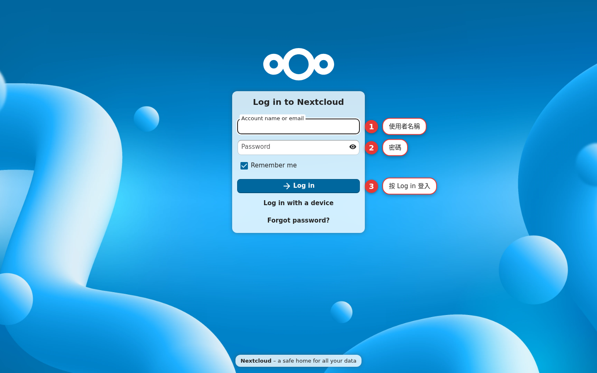

First open and login
Open Nextcloud in a browser, log in to your account, and get to know the first screen you land on. By the end of this chapter, you'll be able to get in and out of this cloud safely, and you'll know where to look when a login will not go through.
Logging in is the door to this cloud
Nextcloud is a multi-user platform: everyone has their own account, and only after you log in do you see your own files and apps. That "door" protects your data, and it also decides which features you get to use. Learning to log in properly is the starting point for every chapter that follows.
Accounts and roles
Nextcloud accounts are created by an admin, and you are handed a "username + password" pair. There are two roles:
| Role | What they can do |
|---|---|
| Admin | Manage users, storage, Apps and site-wide settings |
| Standard user | Upload, organize and share their own files and apps |
Five steps to log in
Open the site URL
Type
https://woowtech-nextcloud.woowtech.iointo the address bar, and note that it ishttps. You are redirected to the login page at/login, where you see "Log in to Nextcloud".Type your username
Type your username into the user field (for an admin, that is
admin).Type your password
Type your password into the password field. The "Show password" eye icon on the right lets you check it for a moment.
Press Log in
Press the "Log in" button, or hit Enter. On success you land on the Dashboard at
/apps/dashboard/.Confirm it is your own account
Open the settings menu (your avatar) at the top right and confirm the name shown is yours. If it is, you are logged in.

What you see after you log in
By default you land on the Dashboard, an overview page:
- At the top there is a greeting (Good morning / Good afternoon), and below it the widgets you can customize (Recommended files, Calendar, Tasks and so on).
- The row along the very top is the app navigation: Dashboard, Files, Photos, Activity… (which apps appear depends on which ones are installed).
- At the top right you have unified search, notifications, the Contacts menu, and your avatar (the settings menu).
- At the bottom right of the page there is usually a "Customize" link for adjusting the Dashboard widgets.
Login security and logging out
Check https and the certificate
The address bar has to show
httpswith the padlock. If you see a "Not secure" warning, stop, and do not type your credentials.Always log out on a public computer
From your avatar at the top right (the settings menu), choose "Log out", then close the browser.
Do not post your credentials in a group chat
Pass login details through a private channel. Do not post them in a public chat or leave them in a notepad.
Common login pitfalls
You get "untrusted domain"
The URL has not been added to the trusted domains, so the login page blocks it. That is an admin setting (Chapter 22, Appendix B), so ask your admin to handle it.
The password is wrong
Check the capitalization, whether your input method has slipped into full-width characters, and whether there is a space at either end. Several wrong attempts in a row can lock you out temporarily, so wait a moment and try again.
You forgot your password
On Nextcloud an admin normally resets the password for you. If the site has email configured, you can use "Forgot password" to have a reset message sent to you.
The screen is blank or spinning after login
Refresh the page. If it still does not come up, the server may be busy or updating, so wait a moment and try again.
Login FAQ
I do not have an account. How do I get one?
Can I be logged in on my phone and my computer at the same time?
What is "Log in with a device"?
Do my files disappear after I log out?
Can I change my own password?
Official sources
| Source | What to verify |
|---|---|
| Nextcloud user manual | Logging in and the basics |